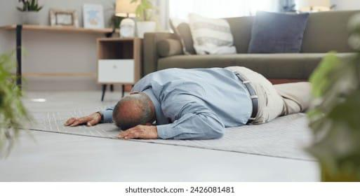

La position de récupération et maintien des voies aériennes

L'inconscience est un état dans lequel une personne ne réagit pas aux stimuli externes. Elle peut être causée par plusieurs facteurs : trauma, manque d'oxygène, hypoglycémie, ou autres urgences médicales. Une personne inconsciente peut avoir des difficultés respiratoires d'où l'importance de maintenir les voies aériennes dégagées.
La position de récupération est critique pour maintenir les voies aériennes libres. C'est le positionnement recommandé pour toute personne inconsciente mais respirant. Gardez la tête bien positionnée pour éviter l'asphyxie. Attendez toujours l'arrivée des professionnels et notez les changements dans l'état de la personne.